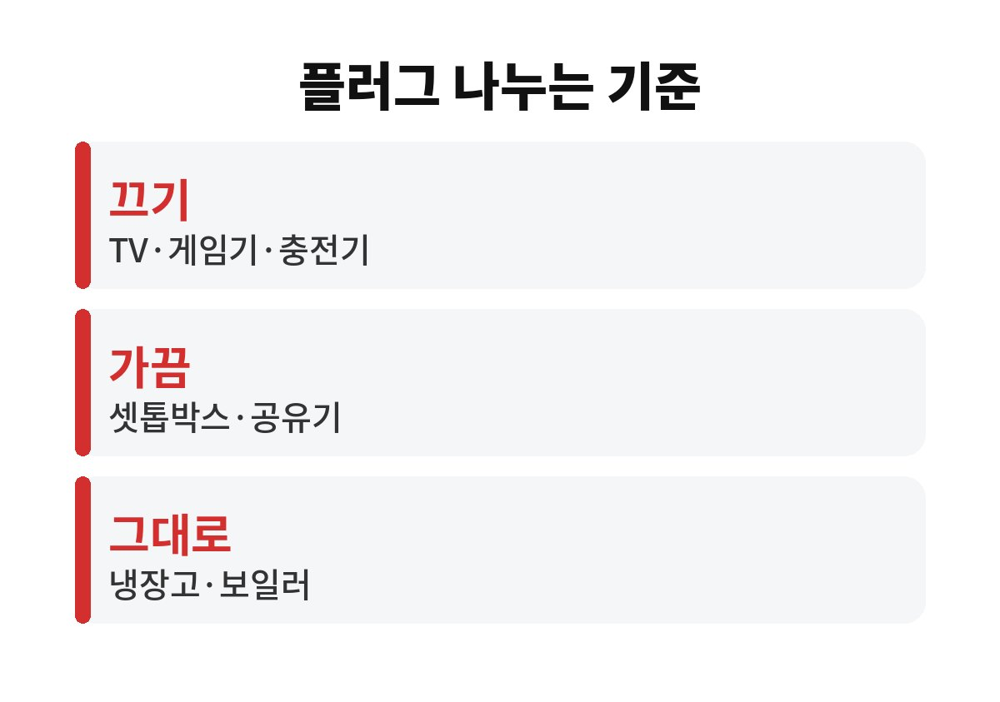
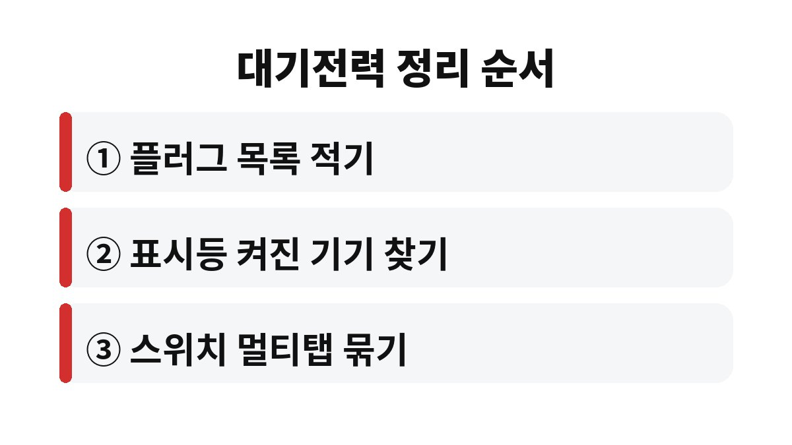

대기전력 줄이는 법은 모든 플러그를 뽑는 것이 아니라, 꺼 둔 채로도 전기를 쓰는 가전과 늘 켜져 있어야 하는 가전을 먼저 나누는 데서 시작한다.
대기전력은 전원을 끈 상태에서 리모컨 신호를 기다리거나 시계와 표시등을 켜 두느라 흘러가는 전기다.
하나하나는 몇 와트에 그쳐도 하루 24시간 쉬지 않고 쌓인다.
집 안 플러그는 세 무리로 나뉜다.
기준은 하나다.
전원을 다시 넣었을 때 설정이 날아가거나 안에 든 음식이 상하면 꽂아 두고, 다시 켜는 데 몇 초면 되는 기기는 끈다.
| 구분 | 예시 가전 | 플러그 관리 |
|---|---|---|
| 꺼도 되는 쪽 | TV·사운드바·게임기·안 쓰는 충전기 | 스위치 멀티탭으로 끄기 |
| 따져 보고 끌 쪽 | 셋톱박스·인터넷 공유기·데스크톱 | 오래 비울 때만 끄기 |
| 꽂아 둘 쪽 | 냉장고·김치냉장고·보일러 | 끄지 않는다 |

냉장고와 김치냉장고는 대기전력이 아니라 늘 일하는 가전이다.
보일러 전원을 끊으면 동파 방지 기능까지 멈출 수 있어 겨울에는 특히 손대지 않는다.
표의 가운데 칸은 집마다 답이 다르다.
재택근무로 컴퓨터를 매일 쓰는 집과 주말에만 켜는 집은 같은 기기라도 관리 방법이 달라야 한다.
TV, 사운드바, 게임기처럼 함께 켜고 함께 끄는 기기는 스위치가 달린 멀티탭 한 곳에 모은다.
잠들기 전 스위치 하나만 누르면 끝난다.
플러그를 손으로 뽑았다 꽂기를 반복하면 콘센트가 헐거워지고, 귀찮아서 며칠 못 가 그만두게 된다.
셋톱박스는 전원을 완전히 끊었다 켜면 부팅과 채널 정보 수신에 시간이 걸린다.
새벽에 소프트웨어 업데이트를 받는 기기도 있어 매일 끄면 업데이트가 밀릴 수 있다.
공유기를 끄면 인터넷에 연결된 보일러 원격 제어나 홈캠도 같이 끊긴다.
그래서 이 두 기기는 매일이 아니라 며칠 집을 비울 때만 끄는 쪽이 현실적이라고 본다.
휴대폰 충전기는 휴대폰을 뺀 뒤에도 콘센트에 꽂혀 있으면 미세한 전기를 쓴다.
전자레인지는 시계 표시 때문에 늘 불이 켜져 있다.
밥솥 보온은 대기 상태가 아니라 실제로 열을 내는 소비라서, 보온을 반나절 넘게 켜 두면 웬만한 대기전력보다 전기를 더 쓴다.
비데는 변좌와 온수를 데워 두는 기능 때문에 아무도 쓰지 않는 시간에도 전기를 쓴다.
리모컨이나 본체에 절전 모드가 있으면 밤 시간이나 외출 시간에 맞춰 켜 둔다.
여름에는 변좌 온도 기능을 끄는 것만으로도 늘 데우는 시간이 줄어든다.
데스크톱 컴퓨터는 켜 둔 채 자리를 비우는 시간이 대기 상태보다 길다.
윈도우 설정의 시스템 > 전원 메뉴에서 화면 끄기와 절전 모드 전환 시간을 짧게 잡아 두면 자리를 비운 사이 쓰는 전기가 줄어든다.
모니터와 스피커는 컴퓨터와 같은 멀티탭에 꽂아 작업이 끝나면 한 번에 끈다.
밤에 거실 불을 끄고 둘러보면 TV 아래, 책상 밑, 주방 조리대 위에 작은 빨간 불이나 초록 불이 여러 개 켜져 있다.
그 불 하나하나가 지금도 전기를 쓰고 있다는 표시다.
계산은 간단하다.
대기전력이 5W인 기기 하나를 한 달 내내 꽂아 두면 5W에 24시간과 30일을 곱해 3.6kWh가 된다.
이런 기기가 집에 서너 개라면 한 달에 10kWh를 넘긴다.
대기전력만 정리한다고 전기요금이 크게 내려가지는 않는다.
겨울에는 전기히터나 전기장판 사용 시간을 줄이는 쪽이 훨씬 크다.
다만 누진 구간 경계에 걸친 달이라면 이 몇 kWh가 구간을 가를 수 있어 그냥 넘기기 아깝다.
제품마다 대기전력 수치는 제품 설명서의 소비전력 항목이나 본체 뒷면 표시에서 확인한다.
같은 TV라도 빠른 켜기나 음성 인식 대기 기능을 켜 두면 꺼진 상태에서 쓰는 전기가 늘어나니, 쓰지 않는 기능은 TV 설정 메뉴에서 꺼 둔다.
순서는 한 번에 다 하지 않아도 된다.
주말 하루 콘센트 위치만 적어 두고, 멀티탭 정리는 다음 날 해도 늦지 않다.
멀티탭을 바닥에 둘 때는 물기가 닿지 않는 곳에 두고 위에 물건을 쌓지 않는다.

대기전력은 한 번 정리해 두면 매일 손이 덜 가는 절약이다.
처음 한 번 콘센트 앞에 앉아 나누는 데 30분이면 충분하고, 그다음부터는 스위치 하나 누르는 습관만 남는다.
어느 기기를 꺼도 되는지 애매하면 설명서의 전원 관련 주의 문구부터 본다.
설명서에 없으면 제조사 고객센터에 모델명을 대고 묻는 편이 빠르다.
※ 2026년 기준 공공기관 안내를 바탕으로 정리한 글이며, 집 구조와 제품에 따라 결과가 다를 수 있어 제품 설명서를 함께 확인하길 바란다.